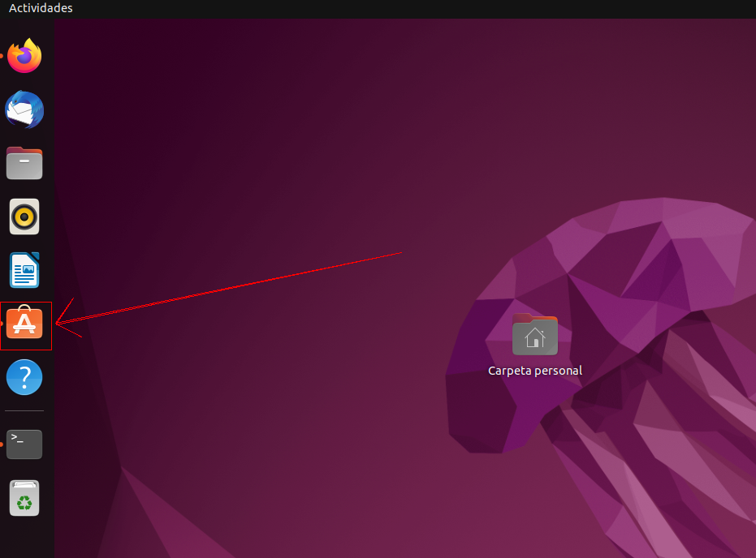
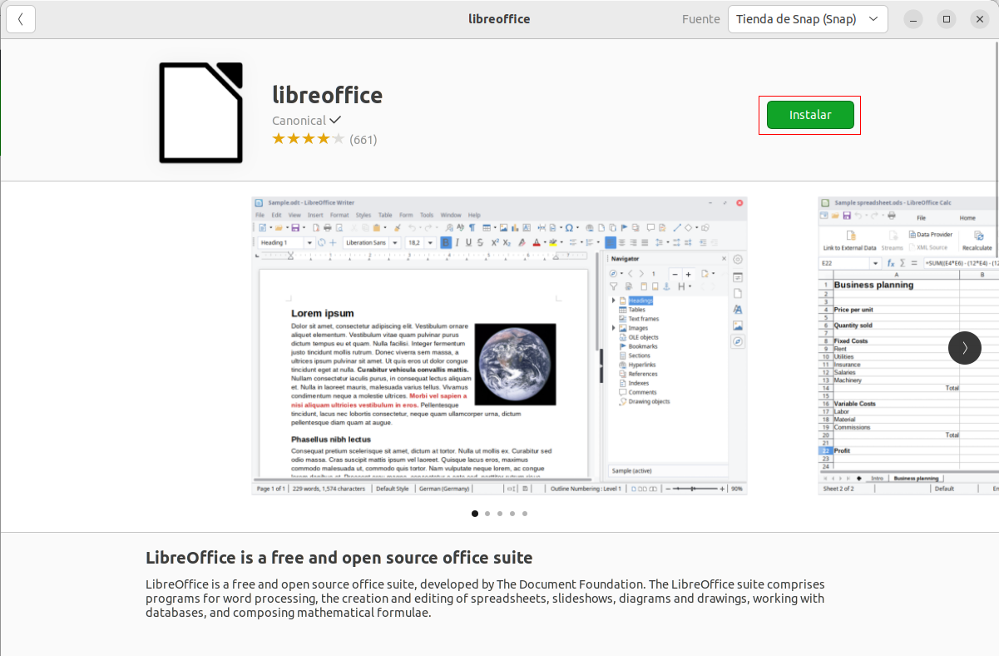
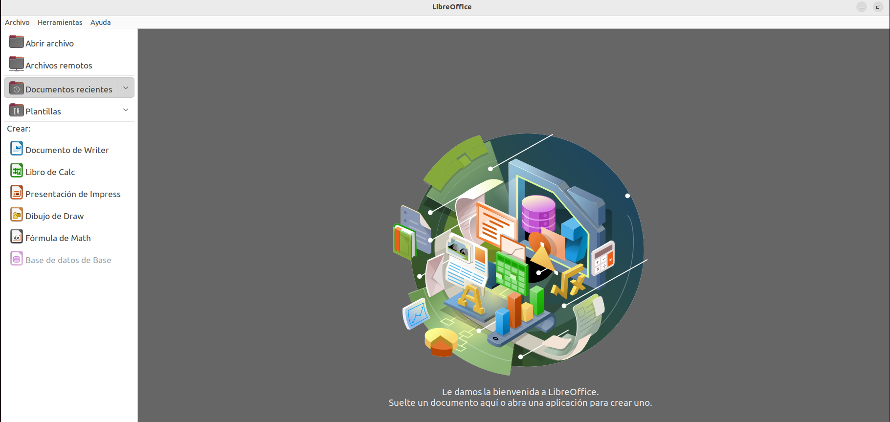
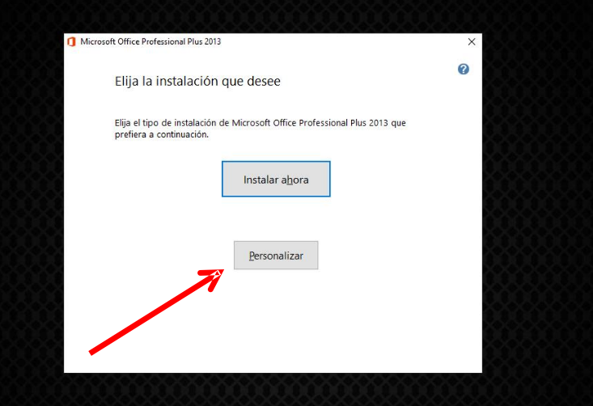
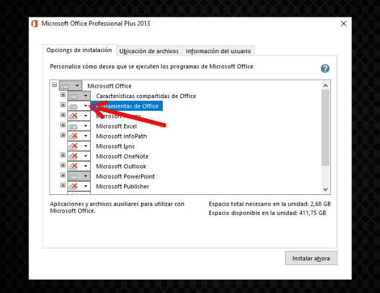
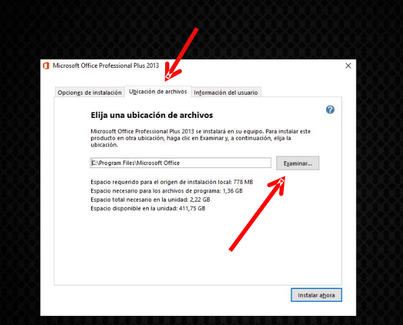
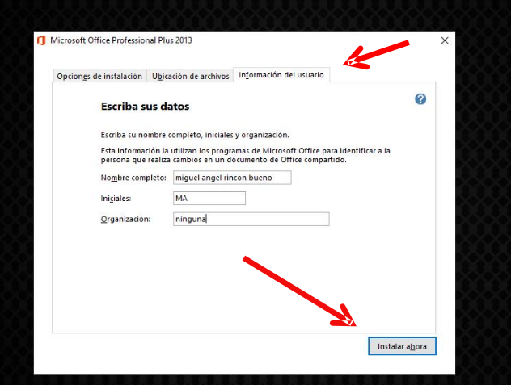
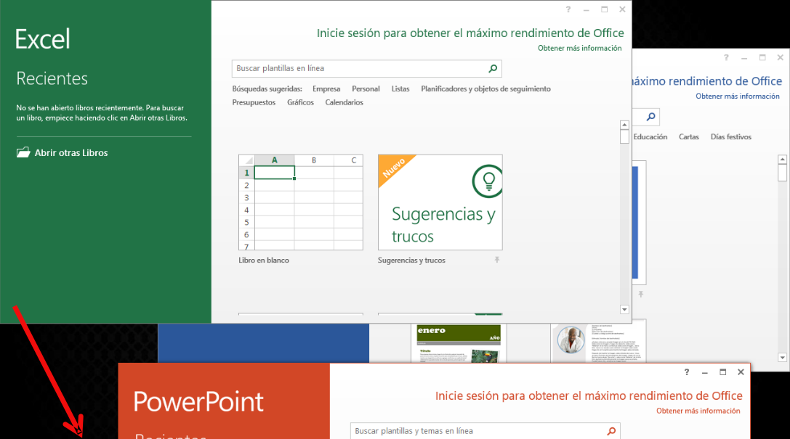

Vamos a instalar dos softwares ofimáticos, primero para Linux utilizando Libre Office y Luego para Windows utilizando Office2013.
ㅤ
Libre office es un software libre para su completo uso, tanto en equipos Linux como Windows entre otros... Este se basa en la creación y modificación de documentos ofimáticos, textos, datos...
Para instalar libre office en ubuntu nos iremos a su tienda (Ubuntu Software), le daremos a buscar y buscaremos office.
ㅤ
Buscamos e instalamos el paquete LibreOffice.
ㅤ
ㅤ
ㅤ
Vemos como se nos instala todos los programas de LibreOffice.
Comprobamos que este correctamente instalado.
ㅤ
Office es un software comercial, solo para equipos Windows. Este se basa en la creación y modificación de documentos ofimáticos, textos, datos...
Para instalar Office nos descargaremos el launcher, debemos comprarnos el producto previamente de su pagina oficial: Aquí
ㅤ
Ahora seleccionamos los programas de Office que queramos instalar, en mi caso, Herramientas de Office, Excel y Powerpoint.
ㅤ
ㅤ
Ahora elegimos la ruta donde queremos instalar el programa
ㅤ
Introducimos nuestros datos de usuario.
ㅤ
Ya tenemos todos los programas instalados.
ㅤ
LibreOffice esta disponible para ambas plataformas principales Linux y Windows, este contiene multiples programas ofimáticos gratuitamente.
Office solo esta disponible para Windows, sus programas son mejores que los de libre office cuenta con mas opciones y algunas mas "amigables". Su mayor inconveniente es el precio, suele ser bastante caro.
Ambos softwares compatibilizan sus extensiones, para que desde un programa u otro se puedan abrir diferentes extensiones de un archivo. Practicamente funcionan de la misma manera, pero cada uno cuenta con sus caracteristicas.